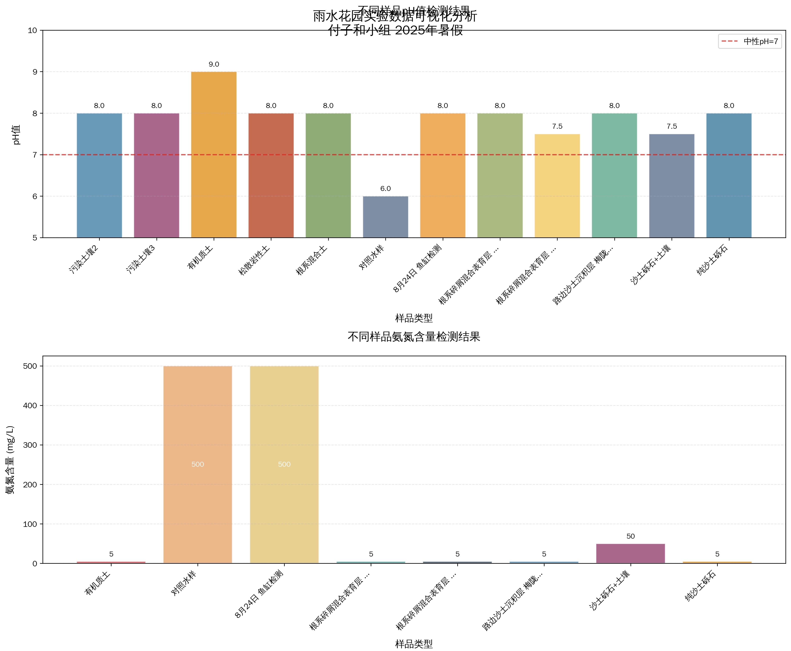
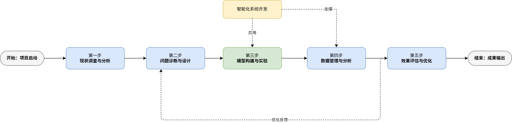
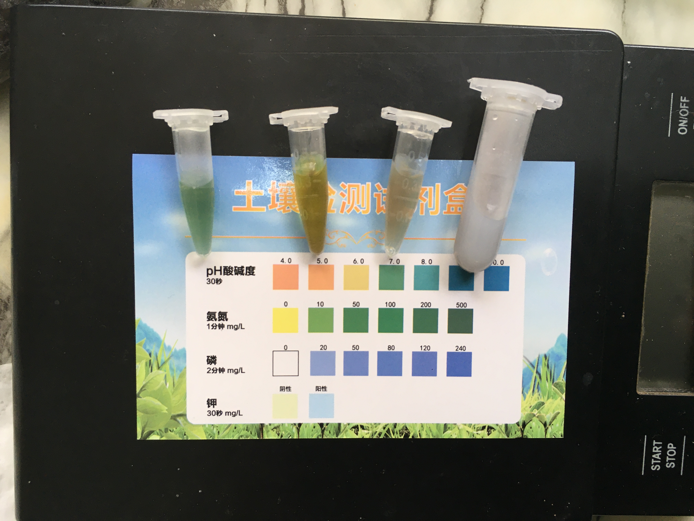
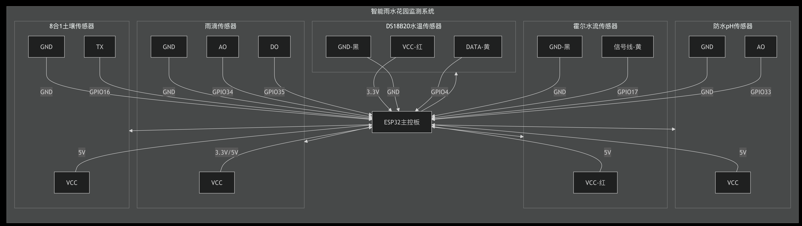
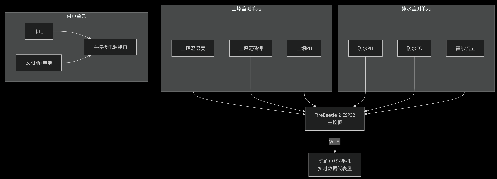

物联网传感网络 × 云端自动采集 × 智能预警规则引擎。数据每 5 分钟由校园传感设备上报，云端管道自动入仓、巡检、预警。南洋模范中学 青少年科技创新大赛项目。
状态判定：最新数据超过 15 分钟未更新即判离线，预警引擎同步向微信推送告警。
溶解氧呈现显著的昼夜节律：午后光合作用产氧达峰，凌晨呼吸作用耗氧触底，是判断池塘生态健康的核心指标。
参考线：3 mg/L 低氧预警（黄）/ 2 mg/L 严重缺氧（红）
短时变幅 >10%/小时 触发扰动预警（径流/污染输入信号）
气象因子（光照、气温）是溶解氧昼夜节律的驱动变量，用于构建低氧预测模型。
由实时数据驱动的决策引擎：综合溶解氧、水位、电导率、水温、气象与设备状态，给出当下可执行的处置建议。规则阈值源自课题组 9 月数据回测标定与雨水花园对照实验结论。
由预警规则引擎自动产生（规则经 9 月历史数据回测标定，误报率 0）。
覆盖水质、气象、空气、土壤、环境五类传感器的校园物联网。
| 设备 | 类型 | 位置/用途 | 状态 |
|---|---|---|---|
| 加载中… | |||
对池塘边缘（X1）、池塘底泥（X2）、人工湿地（X3）各 3 份重复土壤样本的宏基因组测序结果。这是肉眼看不见的生态底座，也是本课题的核心科学发现层。
传承自上届课题组的土壤检测阈值库（比色法/滴定法标定）。输入检测值，即时获得等级评价与处置建议。
上届课题组的对照实验：过量鱼粮投入水体后，土壤浸出液检测显示——这正是我们预警引擎"EC 扰动→排查投喂"规则的实验依据。
过量投喂组的水-土系统出现典型的富营养化指纹：氨氮飙升至常规水体的数百倍，磷钾同步累积。pH 暂未漂移，说明系统缓冲尚未崩溃——但一旦崩溃就是藻华。
→ 对本项目的意义：池塘鱼类投喂必须严格控制；这也解释了 X2 底泥抗性基因富集的潜在成因之一。

本项目站在上届课题组（付子和、胡展鸣、倪云睿）雨水花园研究的肩膀上：他们用 ESP32 证明了低成本物联网监测的可行性，我们把它升级为云端自治的数字孪生与预警系统。



